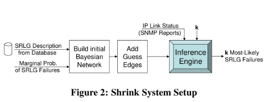

本篇文章是对基于SRLG进行故障定位方法的改进:

(a)图和(b)图的区别在于(b)图在SRLG和所有的link之间都添加了一条边,形成了完全图, 其中对于不属于该SRLG的链路Lu, P(Lu|S) = p, 这里的p是一个很小的值, 通过这种方法可以解决噪音问题。
$P\left(L_{j}=1 \mid S_{i}=1\right)=\left{\begin{array}{ll}1-p, & \forall L_{j} \in S_{i} \ p, & \text { otherwise }\end{array}\right.$
$\arg \max {S{1}, \ldots, S_{n}} P\left(S_{1}, \ldots, S_{n} \mid L_{1}, \ldots, L_{m}\right)$
subject to
$\text { number of }\left{S_{i}=1\right} \leq \kappa$
这里使用k来限制SRLG的数目, 是因为多个SRLG同时fail的概率是很小的。
算法复杂度: $O\left(n^{\kappa} *(m+n)\right)$
ps:
$P\left(S_{1}, \ldots, S_{n} \mid L_{1}, \ldots, L_{m}\right)=P(S_{1}|L_{1}, \ldots, L_{m})P(S_{2}|L_{1}, \ldots, L_{m})...P(S_{n}|L_{1}, \ldots, L_{m})$
又因为L1-Lm之间相互独立, 所以:
$P(S_{1}|L_{1}, \ldots, L_{m})=P(S1|L1)+P(S2|L2)+...$
$P(S1|L1)=P(L1|S1)P(S1)/P(L1)$
因为 $P(S1)/P(L1)$ 是固定的, 所以转化为求 $P(L1|S1)$